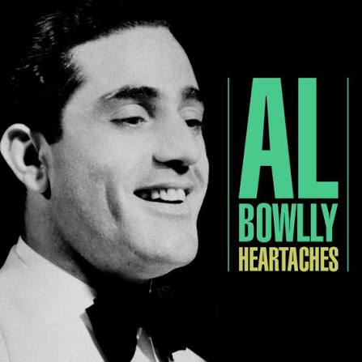

Heartaches, heartaches
My loving you, they're only heartaches
Your kiss was such a sacred thing to me
I can't believe it's just a burning memory
Heartaches, heartaches
What does it matter how my heart breaks?
I should be happy with someone new
But my heart aches for you... (more ? below)